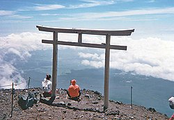

| 地質 | 歷史 | 宗教信仰 | home |
|---|
日本自古將富士山視為崇拜對象，富士山被神格化後，稱為淺間大神；以奉祀淺間大神為主的神社，稱為淺間神社。淺間神社分布在日本各地，富士山側的富士山本宮淺間大社，為淺間神社的總本宮。因此，在富士山八合目以上除去登山道和氣象觀測所之外的385萬平方公尺土地，都屬於該神社所有。但是，由於無法確定靜岡縣和山梨縣的邊界，因此沒有取得土地所有權登記。 淺間大社內供奉的神靈為記紀神話中出現的女神「木花開姬」（このはなのさくやひめ，木花開耶姬），但是目前仍不清楚從何時起這位女神成為了護佑富士山的神靈。日本傳説《日本書紀》中記載，木花開耶姬女神是山神大山祇神的女兒，為天照大神的孫子天津彥彥火瓊瓊杵尊生下二兒子。老大「火闌降命」是隼人吾田氏的祖先，老二取名「彥火火出見尊」的孫子是日本第一位天皇神武天皇。 在古代的《常陸國風土記》中記載有關富士山神和筑波山神的傳說。據說，天神拜訪富士山神的住處，請求留宿，但是被主人以正在齋戒為由拒之門外。後來天神拜訪筑波山神，也請求留宿，結果受到了歡迎。因此，此後筑波山上人流不斷，而富士山卻遭到了終年積雪的懲罰。 平安時代的文學作品《更級日記》中，記載了當時一些人認為富士山神可以決定朝廷次年的人事更替的觀念。
